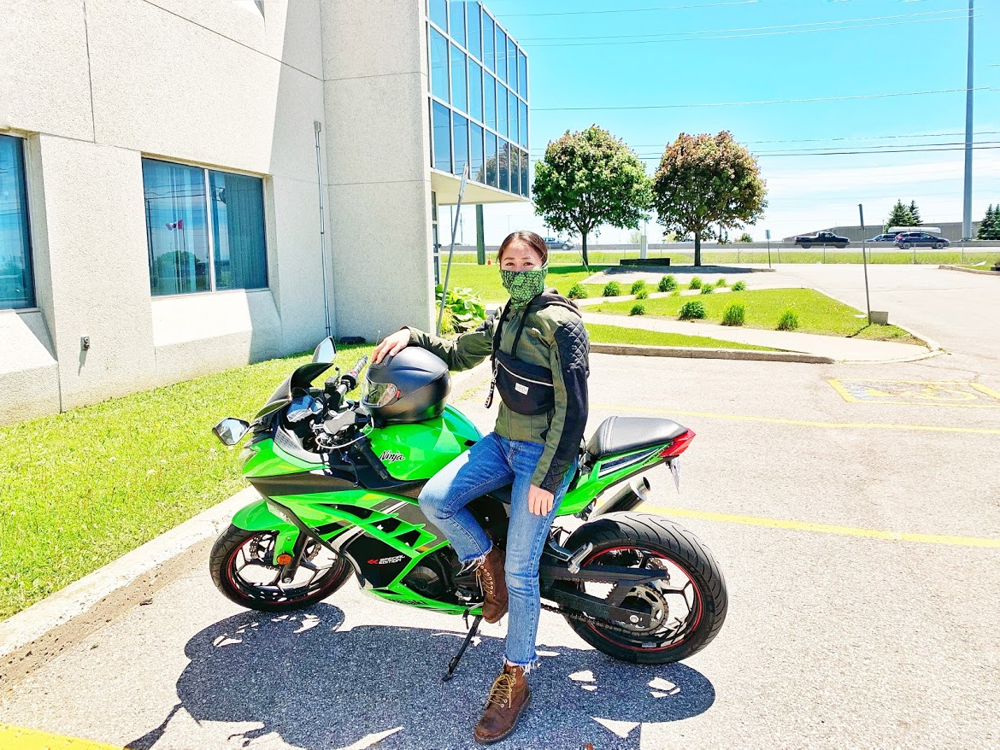

about me
👋👋👋 My name is Christie Tran 🌻. I am a Front End Web Developer based in Toronto.
🏍 2014 Kawasaki Ninja 300 SE is my first bike since I started riding in Canada in 2019. His name is Turtle 🐢
📌 Turtle is bought as an used motorcycle through an online website. Go to My Tips🎁
📌 In my first 3-month-summer with Turtle, I added 8,000km into my bike odometer.
📌 Living in Toronto means riding my bike in a half of year. The rest is parking him in my parking lot due to a long...gg...g winter ⛄
Are you ready to see my bike? 👇 👇 👇
things must know
To ride on Ontario roads, you need to:
- Carry a valid driver’s licence at all times To apply and take the required tests, visit a DriverTest centre.
- Wear an approved helmet (an exemption to Ontario’s mandatory helmet law applies for Sikh operators and passengers who meet the requirements outlined in Regulation 610 (6)) 👉Recommendation for helmets
- Have a valid owner’s permit, licence plate and insurance. 🌻This is my personal choice for insurance🌻
- Obey traffic laws and drive safely. 👉Learn more
Popular helmet brands

This Japanese company was founded by Eitaro Kamata back in 1959. The company was founded in 1959, but began production of industry as an independent entity a year before that, in 1958. They were the first to use Carbon fiber and later Kevlar to make helmets are known for their light weight helmets. They were also the ones to introduce Dual Liner Ventilation.

Founded in 1971, HJC is an exclusive motorcycle helmet producer. If you are looking for a reasonable price range for a motorcycle helmet, HJC really is the company for you. They have superior aerodynamics due to their very own state of the art wind tunnel lab. Their factories are spread across Asia, with one each in China, Korea and Vietnam. HJC are pioneers center locking mechanism, comfort and aerodynamics.

An American manufacturer also makes it to our list. It was founded in 1923 as Bell Auto Parts in Bell, California and made their Motorcycle helmet department in 1954. They invest heavily in safety campaigns like ‘Safe Kids USA’. Bell is a leading company in making professional cycling helmets as well.

The Italian company founded in 1946 by Gino Amisano has its headquarters in Alessadnria, Peidmount, Italy. Agv is owned by Dainees and started by making leather seats and motorcycle saddles. They specialize in Moto GP helmets and have Valentino Rossi as their honorary president, a 7 time world champion of Moto GP.
FUN FACTS 💭
- In addition to motorcycles, Kawasaki also builds ships, power plants, industrial equipment, robots, and spaceships.
- There have been motorcycle manufacturers by all three of the following names: Devil, Satan, and Lucifer.
- Japan built a motorcycle called the TOTO which was powered by human waste.
- Motorcycles are much lighter in weight than cars. Because they are lighter in weight means that they can accelerate faster than cars do on average.
- When cornering a bike, the front tire provides almost 75% of the grip. 👉 More interesting facts
🌻 MY TIPS 🌻
- There are some websites which you can look for an used mortorcycle https://www.kijiji.ca/ ; https://www.craigslist.org/about/sites#CA
- I would like to recommend you to take a riding course before you ride in Canada. After the course, you will get a certificate which helps you to get a cheaper insurance.
- Do-not risk your life to ride in winter. Black ice and snow are biker's enemies in Canada. Motorcycles are a seasonal vehicle here.
- 9 best routes for riders in Ontario